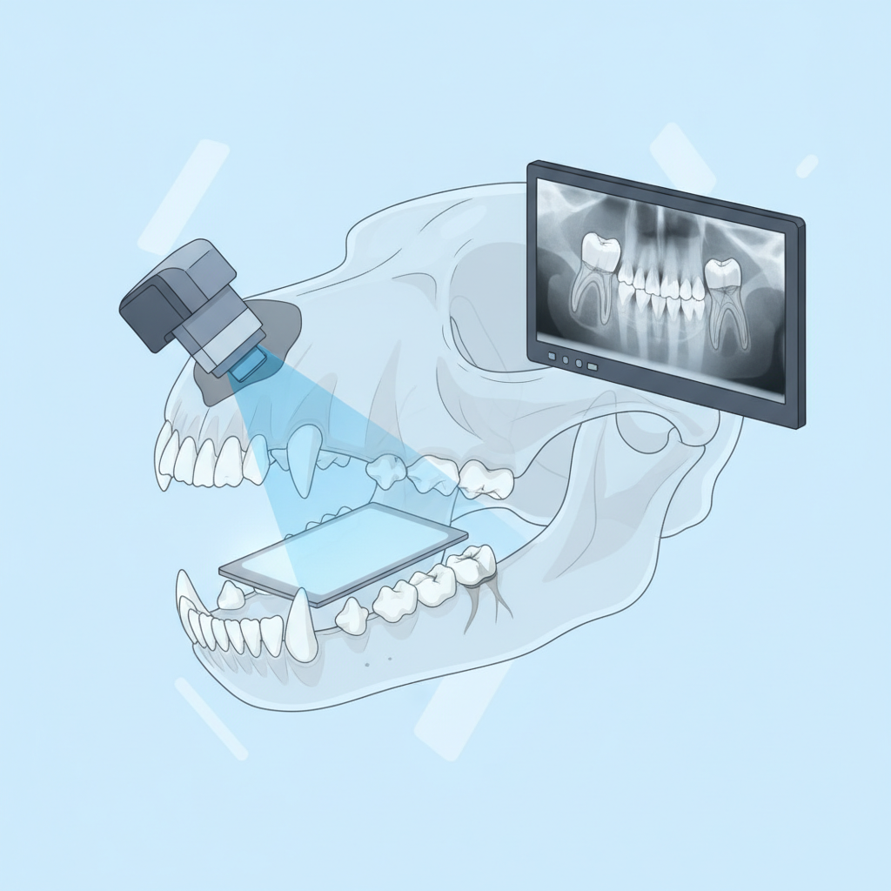

RTG stomatologiczne
RTG stomatologiczne weterynaryjne (radiowizjografia cyfrowa) to kluczowe badanie
diagnostyczne w stomatologii psów i kotów. Szacuje się, że nawet ponad 60%
problemów stomatologicznych u zwierząt kryje się pod dziąsłami – w korzeniach i
kościach, przez co są one całkowicie niewidoczne podczas zwykłego przeglądu jamy
ustnej.U zwierząt badanie to wykonuje się za pomocą specjalnych, niewielkich
aparatów wewnątrzustnych (punktowych). Ze względu na konieczność zachowania
całkowitego bezruchu i precyzyjnego umieszczenia czujnika w pyszczku, RTG
stomatologiczne u psów i kotów zawsze przeprowadza się w znieczuleniu ogólnym
(premedykacji lub narkozie diagnostycznej), najczęściej jako pierwszy etap
zabiegu sanacji (czyszczenia i leczenia) zębów. Dzięki RTG stomatologicznemu
jesteśmy w stanie działać skuteczniej i szybciej, skracając czas zabiegu, a RTG
stomatologiczne pozwala nam na lepsze jego zaplanowanie.